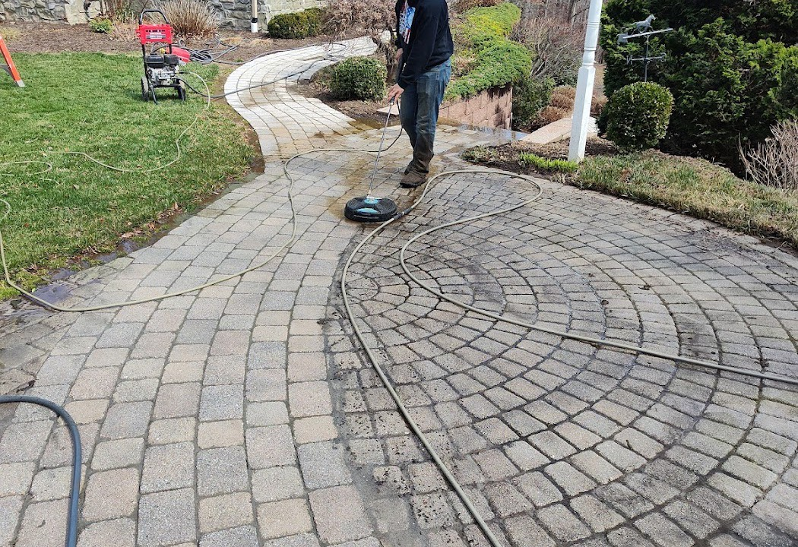
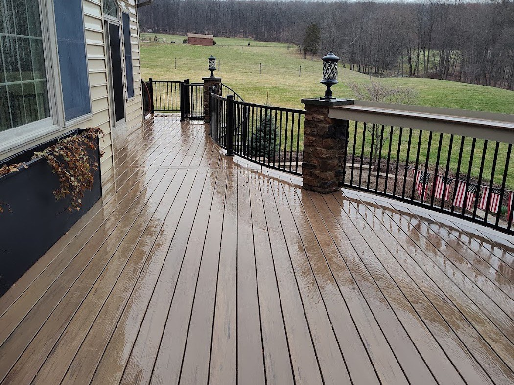
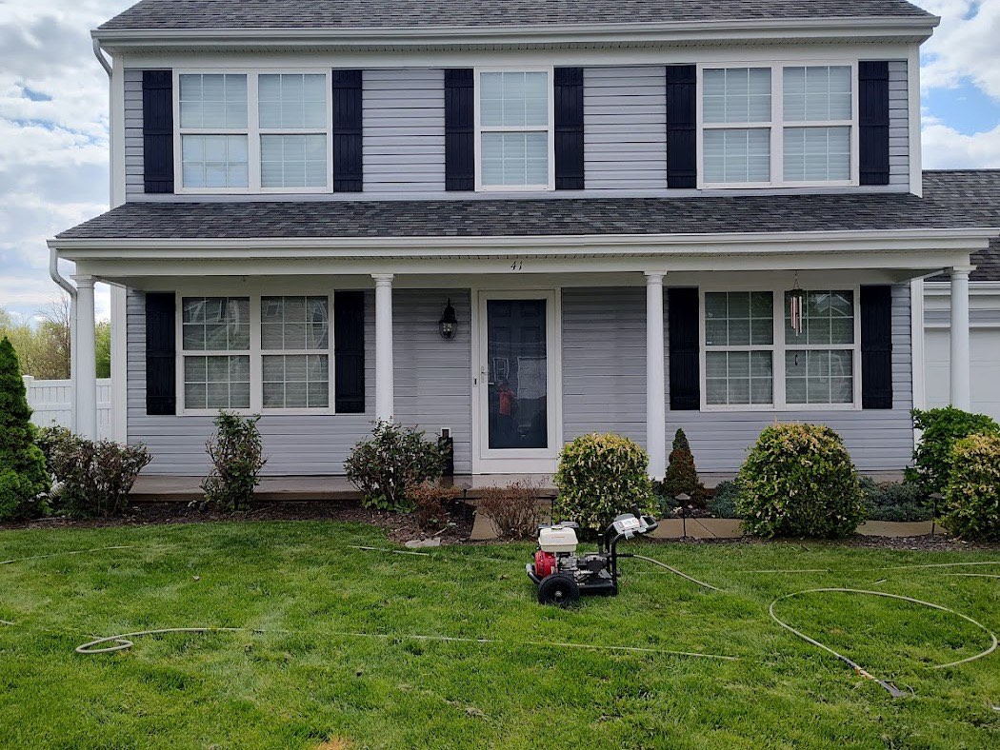
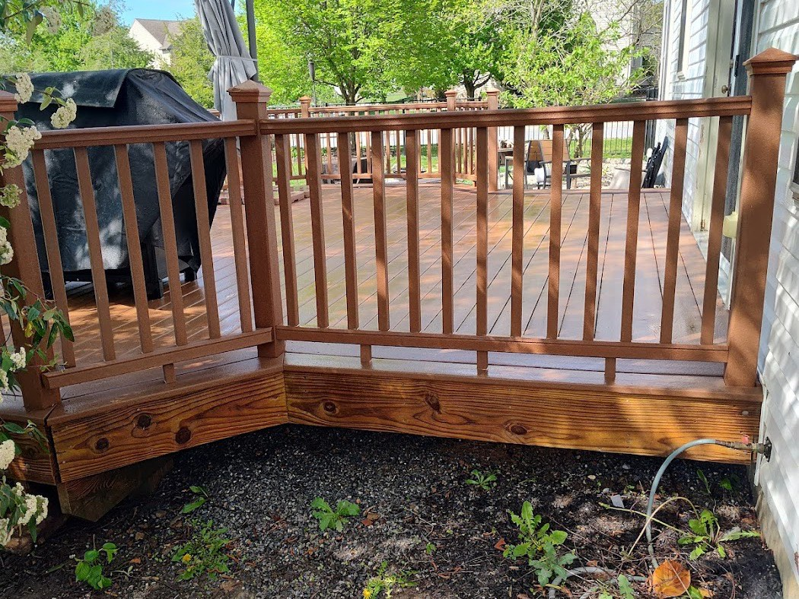
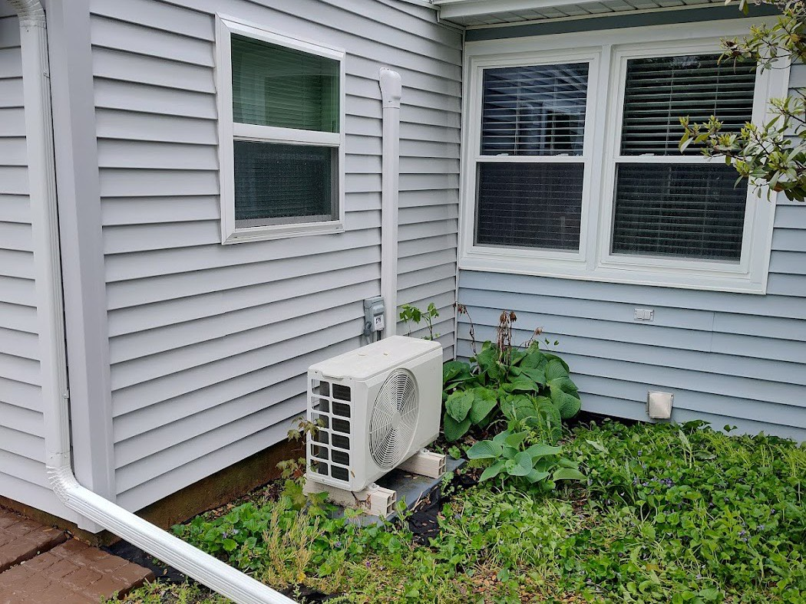
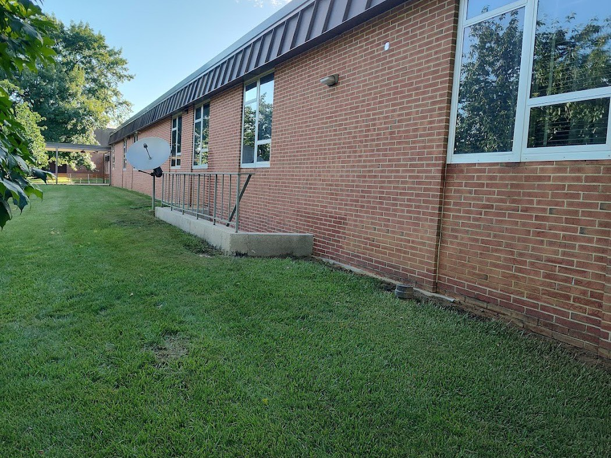
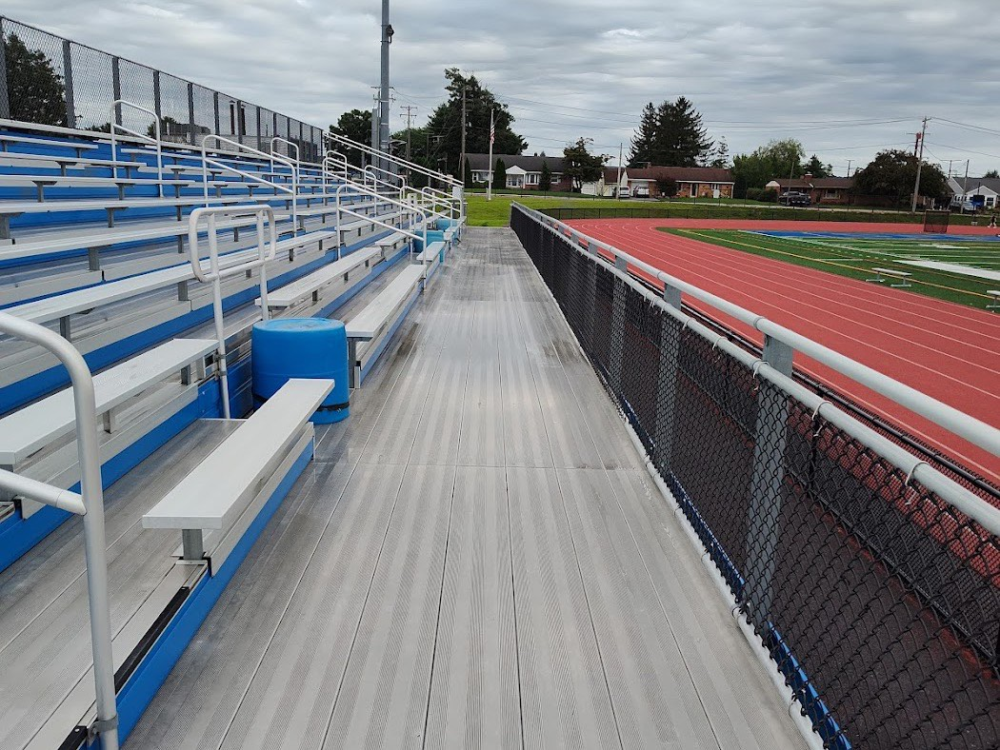

House & Soft Washing
Siding, stucco and trim cleaned with a low-pressure soft wash that lifts mildew, algae and grime without forcing water behind the boards.
Vinyl · stucco · brick · aluminumSoft Wash & Pressure Washing · Stevens, PA
House washing, decks, paver driveways and delicate older siding around Stevens and Lancaster County — soft-washed at the right pressure so the dirt comes off and the surface stays exactly as it should.

What We Clean
Every surface wants a different touch. Vinyl and stucco get a gentle soft wash; concrete and pavers get the pressure they can take; older wood and composite get the care they need. Here's the work we do most.
Siding, stucco and trim cleaned with a low-pressure soft wash that lifts mildew, algae and grime without forcing water behind the boards.
Vinyl · stucco · brick · aluminumComposite and older wood decks brought back without gouging the boards — the kind of finesse job a high-pressure tip can ruin in seconds.
Trex & composite · wood · railingsConcrete, paver and stone driveways and walkways cleaned of dirt, moss and tire marks — a deep, even clean across the whole surface.
Concrete · pavers · walkwaysFarmhouses and older homes with original wood siding handled at the right pressure — cleaned thoroughly without stripping or splintering aged boards.
Old wood · historic homesFences, pergolas and outdoor structures washed clean — restoring the look of the spaces where you actually spend time outside.
Fences · pergolas · railingsStorefronts, brick buildings and facility surfaces kept presentable for customers — scheduled around your hours, not in the way of them.
Storefronts · facilities · brickWhy It Matters
Most exterior damage doesn't come from dirt — it comes from too much pressure on a surface that couldn't take it. The careful approach is the whole job.
Siding, stucco, decks and older wood get a low-pressure soft wash with the cleaning solution doing the work — not a high-pressure tip that etches and gouges.
Concrete, pavers and stone get the full pressure they can handle for a deep, even clean — matched to the surface, never one setting for everything.
Composite decks, original wood siding, delicate older homes — the careful jobs a "blast-it" crew would rather skip are exactly the ones we take.

How It Works
No drawn-out sales process — a quick look at what you need, a clear price, and a clean result.
Call or message with what you'd like cleaned. A few photos help us understand the surfaces involved.
You get a clear, no-obligation price and the right cleaning method for each surface — explained up front.
We arrive on schedule and clean carefully — soft wash where it's needed, full pressure where it's safe.
We walk the finished job with you. The goal every time: clean surfaces, undamaged, the way you'd want them.
From Our Google Reviews
Real reviews from homeowners around Stevens and Lancaster County — including the kind of delicate jobs that worry people most.
"Nathan did an incredible job on my composite deck! I had tried to clean it myself and spent two hours with little to no results, but Nathan came in and completely transformed it. He soft washed the entire deck."
"Nathan did a fantastic job on my house today. It's a farmhouse with old German wooden siding, not the easiest job, and he handled it like a pro."
Recent Work
Every photo here is our own work — homes, decks and surfaces cleaned across the area. No stock images.





Service Area
We're local to Stevens, PA and cover the surrounding northern Lancaster County communities. Not sure if you're in range? Give us a call — chances are we're a short drive away.
Good to Know
Pressure washing uses high-pressure water and is great for hard surfaces like concrete, pavers and stone. Soft washing uses low pressure and a cleaning solution to do the work — it's the safe choice for siding, stucco, decks and older wood that high pressure can damage. The skill is knowing which surface needs which, and we use both accordingly.
It can — if it's done with the wrong pressure. That's exactly why we soft wash delicate surfaces like composite and wood decks and original wood siding. The goal is always a thorough clean with the surface left intact, which is the part homeowners worry about most.
We're based in Stevens, PA and serve the surrounding northern Lancaster County area — including Denver, Ephrata, Adamstown, Reinholds, Akron and nearby towns. If you're close by, give us a call and we'll let you know.
Just call or message (717) 480-3446 and tell us what you'd like cleaned. A few photos help. You'll get a clear, no-obligation quote along with the cleaning method we'd use for each surface.
Yes. Alongside homes, we clean storefronts, brick buildings and facility surfaces, and we schedule around your hours so the work doesn't get in the way of your business.
Free Quote
Tell us what you'd like cleaned and we'll get you a clear, no-obligation price. House, deck, driveway or the tricky job nobody else wants to touch.
Nathan's Quality Pressure Washing LLC · Stevens, PA · Serving Lancaster County